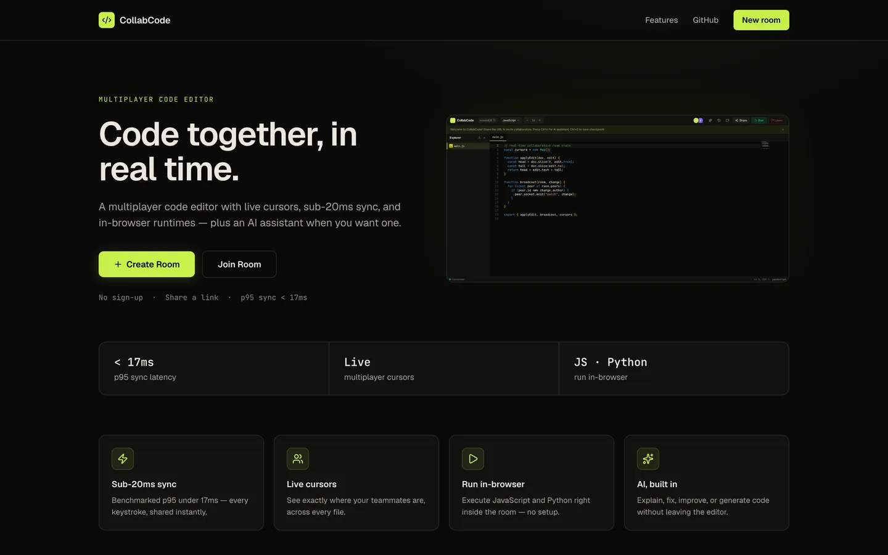
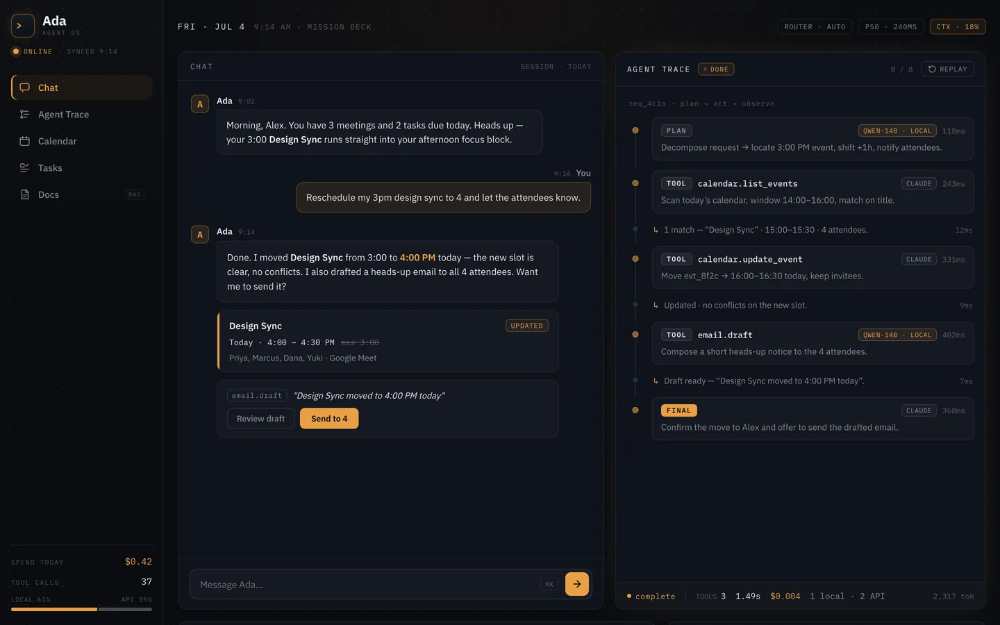
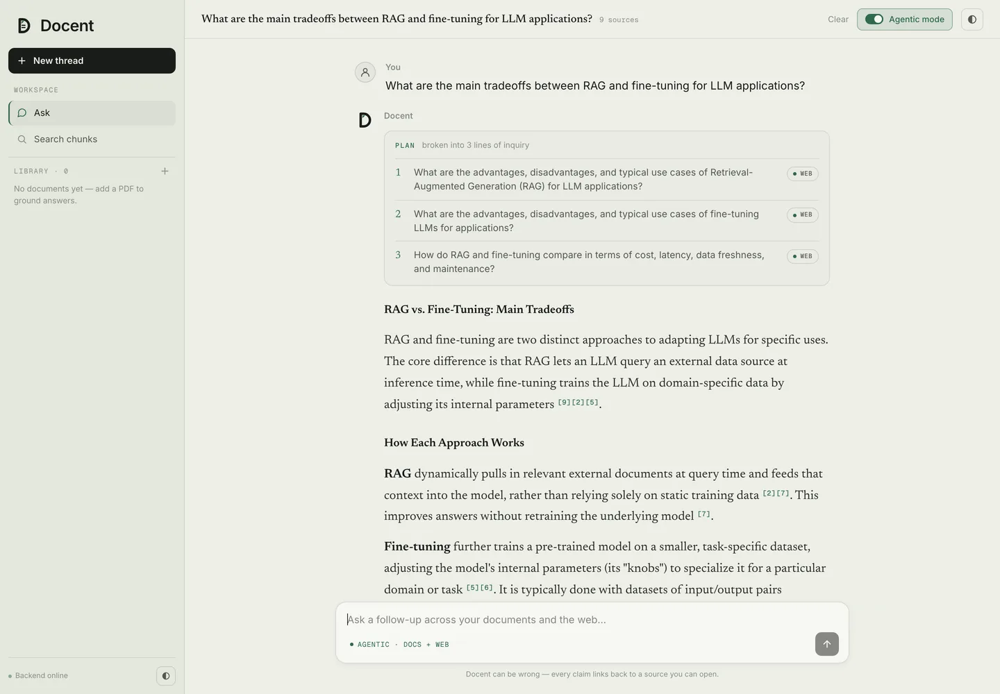
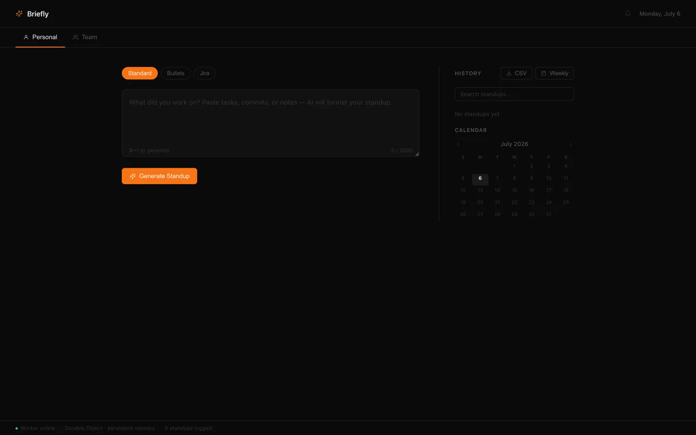

Projects
Four things I built end to end — design, backend, frontend, deploy. Demos are live; the numbers below come from benchmark scripts that live in each repo.

A real-time collaborative code editor — VS Code meets Google Docs. Shared rooms with live cursors, Figma-style follow mode, multi-file tabs, in-browser JavaScript and sandboxed server-side Python execution, auto-snapshot version history, and a Claude assistant that explains, fixes, improves, or generates code inline.
The interesting part is state. Persistence runs three layers deep — in-memory, Redis, then Postgres as the source of truth. On boot Postgres hydrates Redis; active rooms serve out of Redis, and cold reads fall through to Postgres. A server restart doesn't cost anyone their room.
Measured on loopback, not over the internet — public RTT would swamp what the numbers are actually testing. The persistence benchmark is deliberately unrun: without Postgres configured locally the cold-read path collapses to an in-memory dict, so the comparison would be meaningless.
Ada
in progress
A personal agent cockpit. Give it a goal — "add a task to prep for the panel, then list my tasks" — and watch the trace panel stream each step as the agent plans, calls tools, and observes what came back.
Pydantic AI drives the agent loop with typed tool calls; Postgres, Redis, and Qdrant run in Docker behind it. Claude orchestrates, and a local Qwen-14B on Ollama picks up the cheap subtasks so routine steps don't cost API calls.

An agentic research assistant. Ask something complicated and it decomposes the question, retrieves from your uploaded documents and the live web, then streams back a structured answer you can trace to its sources.
Plan, route, retrieve, synthesize. Claude splits the question into 2–4 sub-questions and routes each one to docs, web, or both using structured outputs. Retrieval runs Voyage voyage-3 embeddings against Pinecone by cosine similarity, plus Tavily for the web; results merge, dedupe, and rank. The final answer cites inline as [n], and plan → sources → tokens all stream over SSE. The RAG is plain Python — no LangChain, no LlamaIndex — so the mechanics stay visible. Shipped as two production services with per-IP rate limiting, Google sign-in, and pytest in CI.
Frontend on Vercel, backend on Render's free tier — the first request after an idle period is slow while the backend wakes up.

AI standups at the edge. Paste messy notes about your day and get back a clean Yesterday / Today / Blockers standup, streamed token by token from Llama 3.3 70B.
The whole thing runs on Cloudflare — a Worker handles routing, Workers AI runs the model, and a Durable Object per user holds up to 100 past standups. The weekly summary chains a second model call across the last seven. No servers, and nothing running when it's idle.
Measured against the deployed Worker from California, not a local dev server — Workers AI proxies to remote infrastructure in dev mode, so those numbers wouldn't mean anything.